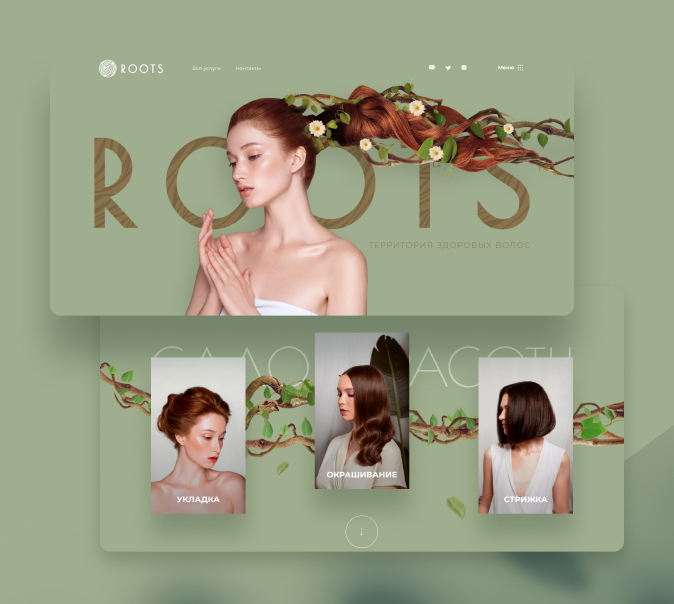
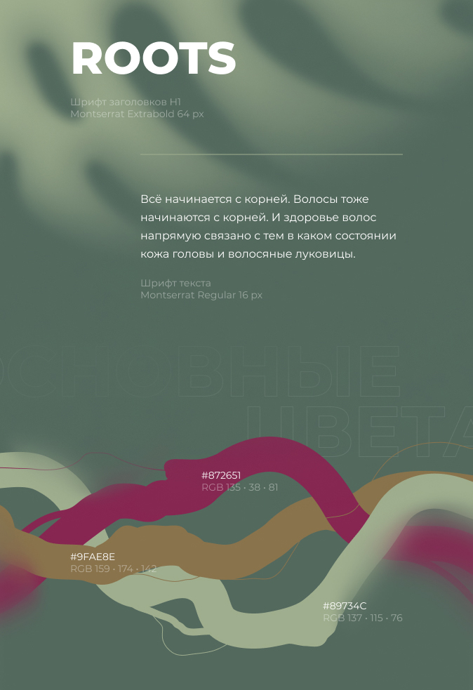
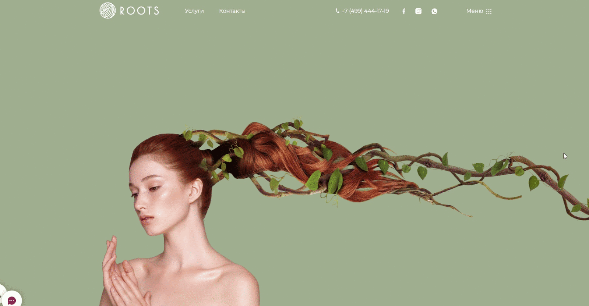
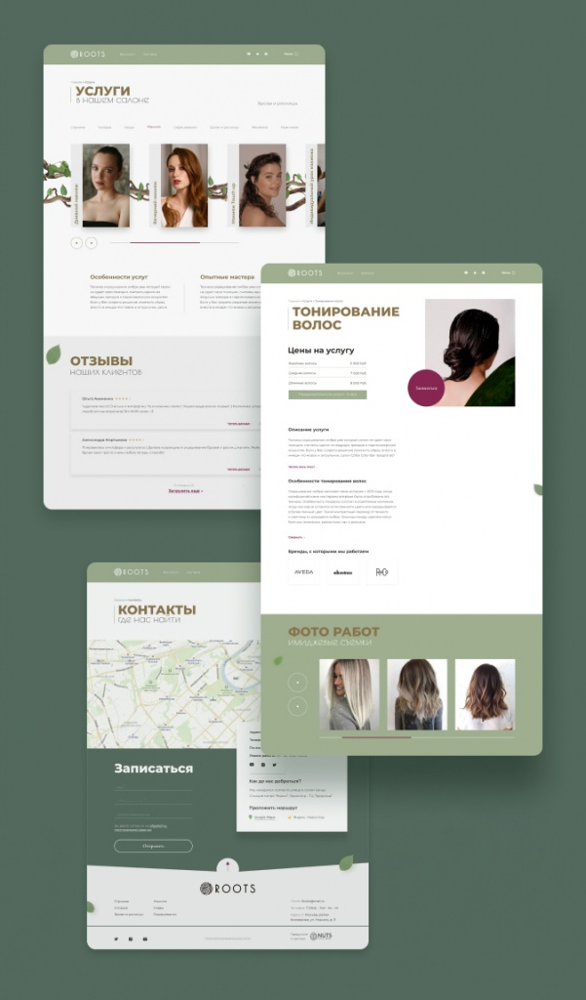
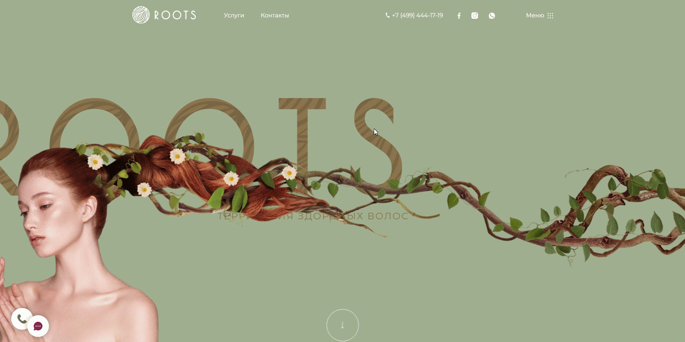
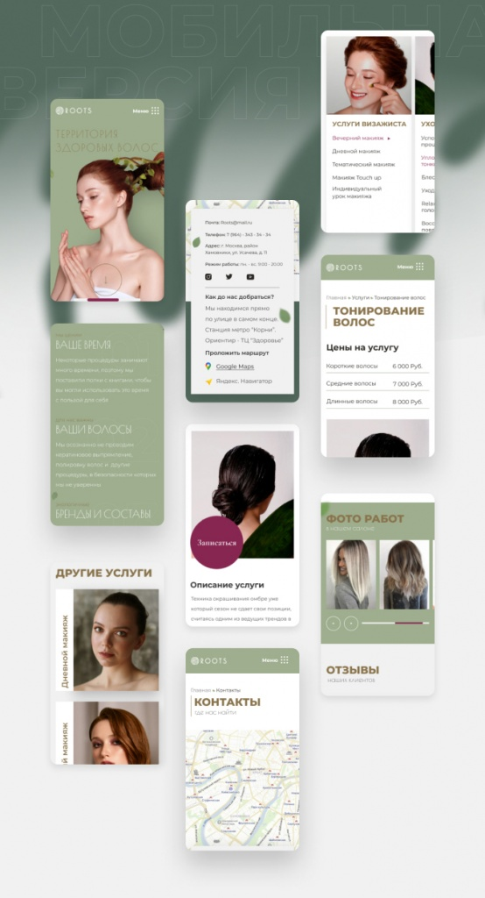

О проекте
Оглавление
Мы обожаем клиентов с необычными концепциями для «обычных» сфер, поэтому за решение этой задачки мы взялись с большим энтузиазмом и очень гордимся результатом.
Клиент
ROOTS — это территория здоровых волос с незаурядной для бьюти-бизнеса цветовой палитрой. Но этот проект удивляет не только цветом, но и интересным замыслом, отраженным в названии.
«Roots» в переводе с английского «корни»:
- Корни волос. Красота волос напрямую зависит от состояния кожи головы и волосяных луковиц. Поэтому компания ставит перед собой задачу научить мастеров и клиентов понимать процессы, происходящие с волосами и поддерживать их красоту. Для этого все сотрудники ROOTS проходят обучение по основам трихологии.
- Корни растений. Это прямая аналогия с их лечебными свойствами и отсылка к корням деревьев, символизирующих долголетие, дающее опыт и знания. Проект имеет ЭКО-направленность, поэтому в работе используются натуральные профессиональные средства (AVEDA, DAVINES, R+Co).
- Корни людей. Уважение к старшим и возможность перенимать их опыт и бьюти-ритуалы — это прекрасно. ROOTS стремится превратить совместное посещение салона красоты в некую традицию, объединяющую поколения женщин и укрепляющую тем самым их связь.
- Информирование клиентов об услугах и их ценах
- Круглосуточный доступ к записи на услугу
- Создание площадки для продвижения бренда
- Демонстрация преимуществ салона
- Формирование доверия
ROOTS — это про естественную красоту волос, это про заботу о себе, которая не заканчивается после посещения мастера, это про уважение друг к другу и любовь к природе.


Цель
Разработка интерактивного сайта, отражающего концепцию бренда, с подробной информацией об услугах и возможностью онлайн-записи.
Задачи
Что сделали?
Отразили экологичность и природную направленность проекта с помощью анимации: при пролистывании страницы горизонтальная анимация преображается в вертикальную, спокойно подтягивая нужные блоки и добавляя сайту динамики.

Позаботились о комфорте юзеров, поэтому из меню в один клик можно попасть на страницу любой услуги, а формы для связи буквально везде, чтобы клиент в любой момент времени смог отправить заявку на процедуру. Без интеграции с Yclients и с Instagram тоже не обошлось!
Каждую страницу подготовили под SEO (столь конкурентному бизнесу продвигаться через контекст будет дорого, так что мы заранее позаботились о другом способе).
Контент полностью управляется из административной части, организовали управления мета-тегами.

Результат
Сайт получился пушечным, за что стоит поблагодарить не только нашу команду, но и клиента, который ответственно подошел к фото-контенту.
Обязательно заглядывайте на rootshair.ru и пишите нам, если хотите создать уникальный сайт, подчеркивающий неповторимость вашего бизнеса — мы это умеем.

